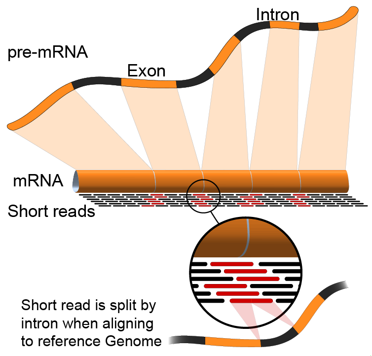
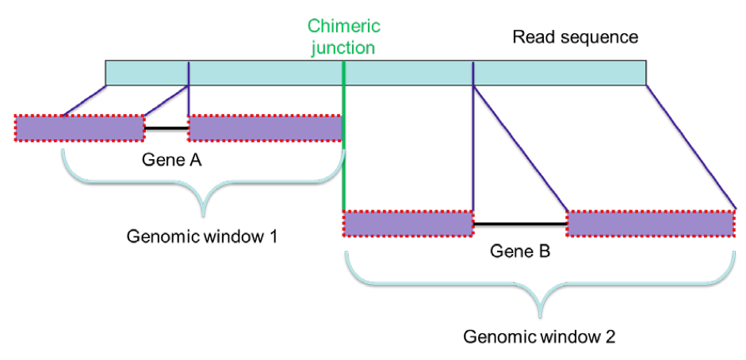
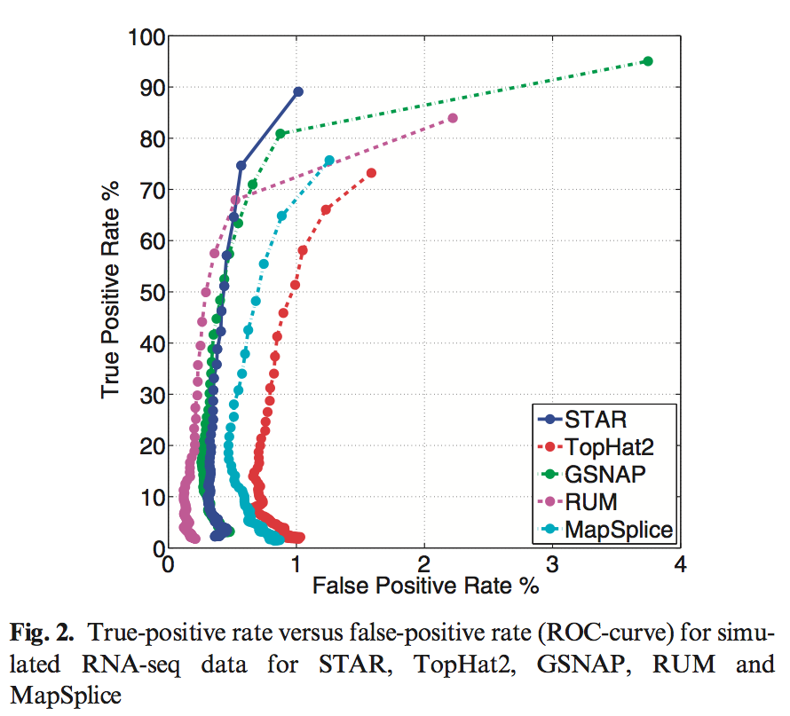
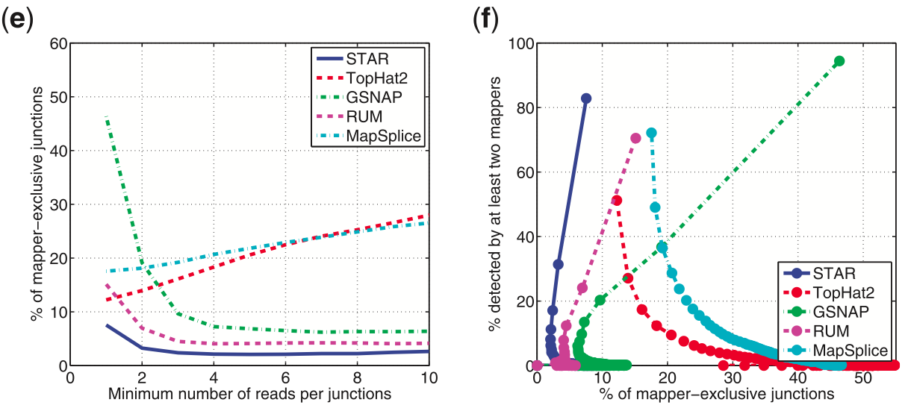
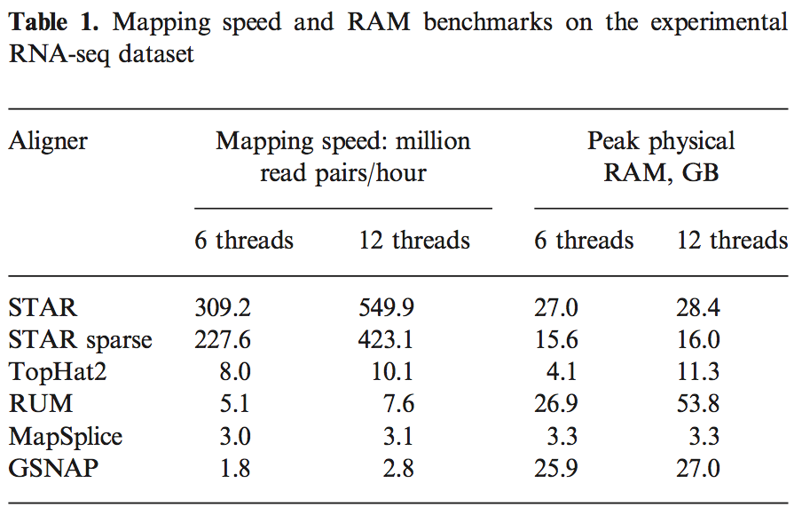

Motivation
The Problem: RNA-Seq
RNA-seq: sequencing the mRNA within a cell at a given point in time.

mRNA is not transcribed from a single contiguous section in DNA.
How do you accurately identify splice sites?
High-throughput sequencing also makes it challenging to detect & characterise splice sites.
Two key tasks:
Accurate alignment
Mapping sequences from non-contiguous regions
# RNA
There is an intermediate step before DNA gets transcribed into mRNA.
Transcription generates pre-mRNA, the exons within the pre-mRNA are then spliced, removing the introns.
# RNA-seq
Sequencing the mRNA.
Note: What does it produce? Picture of reads?
Accurate alignment - containing mismatches, insertions and deletions.
Background
Current Algorithmic Solutions
Extended DNA mapping solutions.
Offer compromises in either accuracy or resources required .
Computational component becoming bottleneck.
Mostly designed for short reads (≤ 200 bases).
Not great for "Third Generation Sequencing" (potentially full length reads).
What is STAR?
A tool specifically designed to align non-contiguous sequences to a reference genome.
"Spliced Transcripts Alignment to a Reference" (STAR)
It stands for ...
It's specifically designed...
Computational bottleneck - too slow or run out of RAM.
Method
Overview
The STAR algorithm consists of 2 main steps:
Seed Search
Clustering, stitching & scoring
2 main steps to STAR; seed and cluster/stitch/score.
I'll go through each stage and explain what's involved.
Method
Seed Search Algorithm
Searching for seeds involves a sequential search for the Maximum Mappable Prefix ($MMP$).
The $MMP$ is calculated as follows:
Given a read sequence $R$, read location $i$ and a reference genome sequence $G$, the $MMP(R,i,G)$ is defined as the longest substring $(R_i,R_{i+1},\dots,R_{i+MML-1})$ that matches exactly one or more substrings of $G$, where $MML$ is the Maximum Mappable Length.
The main idea behind the seed search phase of STAR is to sequentially search through looking for the Maximum Mappable Prefix.
[read the algo]
That didn't make a whole lot of sense to me straight away so I'll demonstrate this with a diagram...
Method
Seed Search Example
Your browser does not support the video tag.
The search is implemented using a suffix array for the reference genome; the read sequence is then threaded through.
## Basic Idea
- Once the MMP is found, this is a splice location, rerun this on the remainder of the read sequence that is not mapped [show diagram].
- Search is performed forwards and backwards on the read, and also can be started from a user defined position to facilitate finding anchors with errors at the ends.
## Figure
- This approach can also help finding mismatches/indels. Run a sequence, if it doesn't reach the end, expand the "anchor" allowing for mismatches (what about indels?).
- Poor alignment from this procedure can help identify sequence traits such as poly-A tails (+AAAAAAA), library adapters (???) or just poor sequencing.
## SA
- The uncompressed SA offer a speed advantage with a trade off for space. Which we'll come to in the results section.
- Build a suffix array of the reference genome and thread the read sequence through the array for a given read position.
Method
Clustering, Stitching and Scoring
Cluster seeds around a selected anchor seed.
Anchor seeds are selected by minimising the number of genomic mappings.
Your browser does not support the video tag.
STAR next builds the entire read sequence...
Clustering the seeds found in the first stage by proximity to a selected number of anchor seeds.
Anchors are selected from the seeds that have the minimum number of genomic mappings. This prioritises seeds that are not as "multi-mapped".
The seeds that map within a user-defined genomic window are stitched together using the local-linear transcription model (genomic ordering of local seeds maintained, with no overlaps).
The size of the genomic window determines the max intron size for spliced alignments.
Method
Clustering, Stitching and Scoring cont.
Stitching is guide by a local alignment score.
$S = +\sum_{m}P_m - \sum_{mm}P_{mm} - \sum_{ins}P_{ins} - \sum_{del}P_{del} - \sum_{gap}P_{gap}$
$P_{ins/del} = P_{ins/del}^{open} + P_{ins/del}^{extend} . L_{ins/del}$
If one genomic window is not enough to map the entire read sequence, another anchor is chosen and clustering applied again.
This results in a chimeric read; where the mRNA is spliced from 2 distal parts of the genome.
If one window is not enough to cover the read sequence, then the alignment is expanded to include another window - resulting in a chimeric read. A join of 2 separate exons from potentially different parts of the genome (diff. chromosome?), joining to form at RNA.
The stitching is guided by a local alignment scoring scheme that includes user-defined scores for mis/matches and indels.
It uses 'Affine Gap' for short insertions and deletions. User defined minimum, otherwise a splice.
Results
The paper compared STAR 2.1.3 results with 4 other popular RNA-seq mappers:
TopHat 2.0.0
GSNAP 2012-07-03
RUM 1.11
MapSplice
All the testing was completed and compared with 4 other RNA-seq mappers.
Results
Performance on Simulated Data
Simulated data allows for accurate expected results.
All aligners were run in de novo mode with default parameters .
ROC curves plot true positive vs. false positive.
$N =$ number of reads required across a splice junction for it to be recognised as a splice, from 1 to 100.
Initially, they used simulated data to accurately benchmark all the mappers; they know exactly what mapping to expect.
__de novo__
- from the beginning - without any knowledge of the genome/transcript. -- String comparison.
__default parameters__
- commonly accepted practice, since all aligners should have been optimised for mammalian genomes and RNA-seq data.
### ROC curve:
- Plots the true positive (a classification hit), vs. a false positive (a misclassification, or false alarm).
- Varies with a detection/discrimination threshold.
- In this case, the plot is varying the number of reads required across a splice junction for it to be recognised as a splice, from 1 to 100. HOW MUCH EVIDENCE REQUIRED FOR A SPLICE.
"All aligners exhibit desirable steep ROC curves at high values of detection threshold."
"At the lowest detection threshold of 1 read per junction, STAR exhibits the lowest false-positive rate while achieving high sensitivity."
Results
Performance on Experimental Data
All mappers were run on an ENCODE long RNA-seq dataset.
Percentage of reads aligned:
STAR - 94%
GSNAP - 94%
RUM - 86%
MapSplice - 85%
TopHat2 - 71%
Results
Performance on Experimental Data cont.
To measure accuracy, the plots included a pseudo-ROC.
It plotted the follow against each other:
the number of junctions detected by at least two mappers (pseudo-true positive)
the number of junctions detected exclusively by each mapper (pseudo-false positive)
The Idea:
If another mapper detected the junction, then it's probably correct.
If no other mapper detected a junction, then it's probably wrong.
Focus
### a
Total number of detected junctions, annotated (solid lines) and unannotated (dashed lines).
### b
percentage of detected junctions that are annotated.
### c
pseudo-ROC curve: percentage of all annotated junctions that are detected versus percentage of detected junctions that are unannotated.
### d
number of unannotated junctions detected by at least two mappers (solid lines) and number of unannotated junctions detected exclusively by only one mapper (dashed lines).
### e
percentage of detected unan- notated junctions that are detected exclusively by only one mapper.
### f
pseudo-ROC curve: percentage of unannotated junctions that are detected by at least two mappers versus percentage of detected unannotated junctions that are detected exclusively by only one mapper.
assumption that junctions detected by only one aligner are more likely to be false positive than the junctions detected by two or more aligners
default parameters are optimized for mammalian genomes. Other species may require significant modifications of some alignment parameters; in particular, the maximum and minimum intron sizes have to be reduced for organisms with smaller introns.
Results
Performance on Experimental Data cont.

### e
percentage of detected unan- notated junctions that are detected exclusively by only one mapper.
### f
pseudo-ROC curve: percentage of unannotated junctions that are detected by at least two mappers versus percentage of detected unannotated junctions that are detected exclusively by only one mapper.
## Negatives
assumption that junctions detected by only one aligner are more likely to be false positive than the junctions detected by two or more aligners
default parameters are optimized for mammalian genomes. Other species may require significant modifications of some alignment parameters; in particular, the maximum and minimum intron sizes have to be reduced for organisms with smaller introns.
Results
Speed Comparison

All mappers were run with default parameters on the ~40 million 2 x 76 Illumina human RNA-seq dataset.
Close to linear scaling of the throughput rate with the number of threads.
STAR with 12 threads ~= 45 million reads per thread per hour.
RAM usage more than most, ~27GB RAM for human genome.
STAR has a sparse options to reduce RAM usage, for less speed.
## Setup
- Tests completed on a "two 6-core Intel Xeon CPUs X5680@ 3.33GHz and 148GB of RAM"
- Mappers ran with default parameters again on the same experimental dataset as before.
## Observations:
- Close to linear scaling of STAR; losing ~10% off per thread mapping speed.
- Pretty impressive; so even 1 thread outperforms next closest mapper.
- ~27GB RAM for human genome. Still within a reasonable level.
- Sparse decreases speed by ~25% within sacrificing accuracy.
Results
Experimental Validation
STAR was validated on data as part of the ENCODE (Encyclopaedia of DNA Elements) and compared against BLAT (a popular mRNA aligner).
Similar or higher accuracy to BLAT.
2 x faster than BLAT, important for high-throughput sequencing.
BLAT, a popular mRNA aligner.